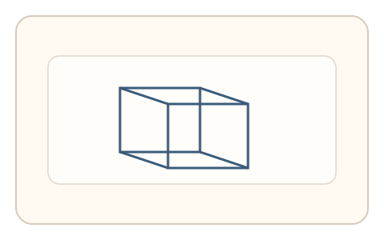
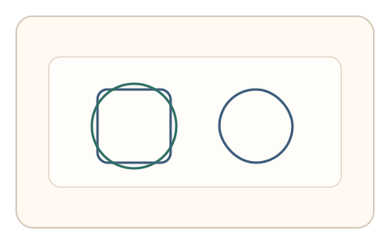
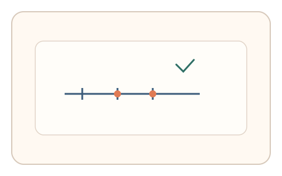

#63
视觉思考范式：Gestalt/对称/频率
已扩展
双稳态首选与翻转
展示双稳态图形并记录首选版本与翻转时刻，用潜伏期与偏好分布验证真实性。
概念原文
展示 Necker 立方体或鲁宾花瓶，用户点击“第一眼看到的版本”，随后按键标记“翻转时刻”。记录首选偏好与翻转潜伏期。
利用双稳态知觉的动态特征，而非识别内容。
研究背景
双稳态知觉（如 Necker 立方体、鲁宾花瓶）会在两个版本间自发翻转，首选偏好与翻转潜伏期具有稳定分布。通过记录动态特征可形成可靠的知觉信号。
核心机制
- 展示双稳态图形。
- 用户点击第一眼看到的版本。
- 随后按键标记翻转时刻。
- 记录首选偏好与翻转潜伏期。
用户流程
- 步骤 1：用户看到双稳态图形。
- 步骤 2：用户选择第一眼版本。
- 步骤 3：系统记录翻转时刻并判定。
判定信号
首选版本偏好
首选偏好在群体中具有稳定趋势。
翻转潜伏期分布
双稳态翻转具有典型时间分布。
判定逻辑
综合首选偏好与翻转潜伏期分布判定；潜伏期过于恒定或无翻转判异常。
对抗面
- 脚本固定选择并定时触发
- 重放真实用户的翻转序列
防御与缓解
- 随机化双稳态图形样式与尺度
- 加入轻微噪声与对比度扰动
- 叠加微时序与鼠标轨迹信号进行多信号验证
可达性与风险
提供替代任务或降低对比度刺激，避免对视觉敏感用户造成不适。
- 长时间注视可能疲劳
- 部分用户翻转不明显导致误差
可视化状态

状态 1：双稳态图形
Necker 立方体或鲁宾花瓶。

状态 2：首选选择
用户标记第一眼版本。

状态 3：翻转判定
记录翻转潜伏期分布。
参考资料
Bistable perception
说明双稳态知觉与翻转现象。
Necker cube
说明经典双稳态图形。